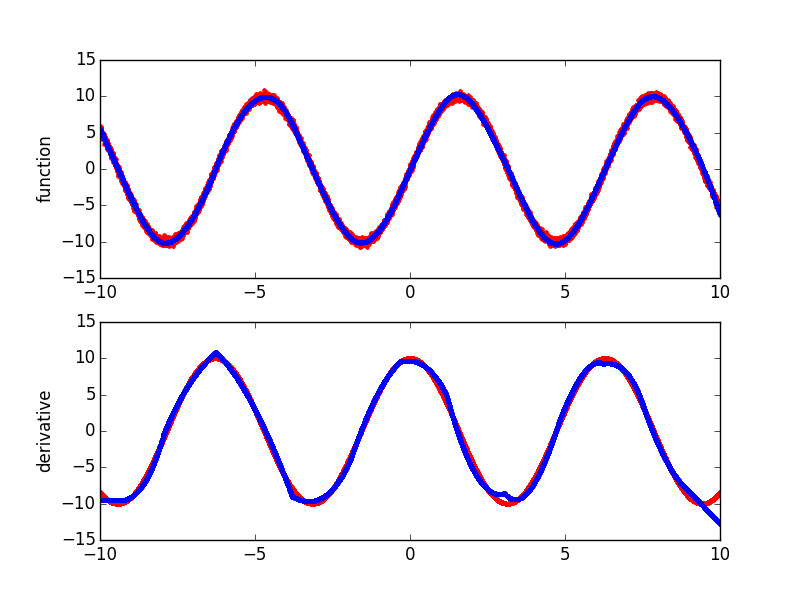

Plotting derivatives of simple sine function¶
A simple example plotting a fit of the sine function and the derivatives computed by Earth.
Script output:
Forward Pass
------------------------------------------------------------------
iter parent var knot mse terms gcv rsq grsq
------------------------------------------------------------------
0 - - - 47.918854 1 47.928 0.000 -0.000
1 0 6 7511 44.378017 3 44.458 0.074 0.072
2 1 6 4611 35.601672 5 35.723 0.257 0.255
3 0 6 8718 22.245946 7 22.358 0.536 0.534
4 0 6 2811 12.177769 9 12.259 0.746 0.744
5 0 6 5618 3.791498 11 3.823 0.921 0.920
6 7 6 1411 1.536961 13 1.552 0.968 0.968
7 5 6 6211 1.121519 15 1.134 0.977 0.976
8 0 6 4118 0.689255 17 0.698 0.986 0.985
9 0 6 9225 0.344292 19 0.349 0.993 0.993
10 9 6 2411 0.250672 21 0.255 0.995 0.995
11 17 6 1011 0.208758 23 0.213 0.996 0.996
------------------------------------------------------------------
Stopping Condition 2: Improvement below threshold
Pruning Pass
-----------------------------------------------
iter bf terms mse gcv rsq grsq
-----------------------------------------------
0 - 23 0.21 0.213 0.996 0.996
1 17 22 0.21 0.212 0.996 0.996
2 2 21 0.21 0.212 0.996 0.996
3 9 20 0.21 0.212 0.996 0.996
4 5 19 0.21 0.212 0.996 0.996
5 7 18 0.21 0.212 0.996 0.996
6 6 17 0.21 0.212 0.996 0.996
7 12 16 0.21 0.217 0.996 0.995
8 13 15 0.23 0.235 0.995 0.995
9 20 14 0.28 0.279 0.994 0.994
10 11 13 0.44 0.441 0.991 0.991
11 21 12 0.60 0.606 0.987 0.987
12 19 11 1.11 1.116 0.977 0.977
13 14 10 1.99 2.002 0.959 0.958
14 4 9 2.53 2.546 0.947 0.947
15 3 8 3.14 3.156 0.935 0.934
16 10 7 5.05 5.079 0.895 0.894
17 8 6 11.08 11.131 0.769 0.768
18 15 5 27.53 27.622 0.426 0.424
19 18 4 36.76 36.855 0.233 0.231
20 1 3 45.84 45.923 0.043 0.042
21 22 2 46.04 46.089 0.039 0.038
22 16 1 47.92 47.928 0.000 -0.000
-----------------------------------------------
Selected iteration: 6
Earth Model
--------------------------------------------------------------------------------------------------
Basis Function Pruned Coefficient
--------------------------------------------------------------------------------------------------
(Intercept) No 447.285
C(x6|s=+1,-6.26875,-5.08316,-3.80451) No -40.5868
C(x6|s=-1,-6.26875,-5.08316,-3.80451) Yes None
C(x6|s=+1,-0.315974,0.653401,1.17646)*C(x6|s=+1,-6.26875,-5.08316,-3.80451) No -4.17297
C(x6|s=-1,-0.315974,0.653401,1.17646)*C(x6|s=+1,-6.26875,-5.08316,-3.80451) No 3.18397
C(x6|s=+1,-7.95761,-7.45435,-6.26875) Yes None
C(x6|s=-1,-7.95761,-7.45435,-6.26875) Yes None
C(x6|s=+1,3.04353,4.38755,4.81086) Yes None
C(x6|s=-1,3.04353,4.38755,4.81086) No 8.15993
C(x6|s=+1,-1.90561,-1.28535,-0.315974) Yes None
C(x6|s=-1,-1.90561,-1.28535,-0.315974) No 12.9332
C(x6|s=+1,6.23693,7.23971,7.61111)*C(x6|s=+1,3.04353,4.38755,4.81086) No -3.19345
C(x6|s=-1,6.23693,7.23971,7.61111)*C(x6|s=+1,3.04353,4.38755,4.81086) No 1.39297
C(x6|s=+1,-3.80451,-2.52586,-1.90561)*C(x6|s=+1,-7.95761,-7.45435,-6.26875) No 0.806822
C(x6|s=-1,-3.80451,-2.52586,-1.90561)*C(x6|s=+1,-7.95761,-7.45435,-6.26875) No 0.679964
C(x6|s=+1,1.17646,1.69952,3.04353) No 51.9728
C(x6|s=-1,1.17646,1.69952,3.04353) No -64.3756
C(x6|s=+1,-9.23024,-8.46088,-7.95761) Yes None
C(x6|s=-1,-9.23024,-8.46088,-7.95761) No 52.7867
C(x6|s=+1,4.81086,5.23416,6.23693)*C(x6|s=+1,-1.90561,-1.28535,-0.315974) No 1.72991
C(x6|s=-1,4.81086,5.23416,6.23693)*C(x6|s=+1,-1.90561,-1.28535,-0.315974) No -0.240492
C(x6|s=+1,7.61111,7.98251,8.99069)*C(x6|s=+1,-9.23024,-8.46088,-7.95761) No 2.56522
C(x6|s=-1,7.61111,7.98251,8.99069)*C(x6|s=+1,-9.23024,-8.46088,-7.95761) No -2.83545
--------------------------------------------------------------------------------------------------
MSE: 0.0842, GCV: 0.0853, RSQ: 0.9982, GRSQ: 0.9982
Python source code: plot_derivatives.py
import numpy
import matplotlib.pyplot as plt
from pyearth import Earth
# Create some fake data
numpy.random.seed(2)
m = 10000
n = 10
X = 20 * numpy.random.uniform(size=(m, n)) - 10
y = 10*numpy.sin(X[:, 6]) + \
0.25*numpy.random.normal(size=m)
# Compute the known true derivative with respect to the predictive variable
y_prime = 10*numpy.cos(X[:, 6])
# Fit an Earth model
model = Earth(max_degree=2, minspan_alpha=.5, smooth=True)
model.fit(X, y)
# Print the model
print(model.trace())
print(model.summary())
# Get the predicted values and derivatives
y_hat = model.predict(X)
y_prime_hat = model.predict_deriv(X, 'x6')
# Plot true and predicted function values and derivatives for the predictive variable
plt.subplot(211)
plt.plot(X[:, 6], y, 'r.')
plt.plot(X[:, 6], y_hat, 'b.')
plt.ylabel('function')
plt.subplot(212)
plt.plot(X[:, 6], y_prime, 'r.')
plt.plot(X[:, 6], y_prime_hat[:,0], 'b.')
plt.ylabel('derivative')
plt.show()
Total running time of the example: 19.70 seconds ( 0 minutes 19.70 seconds)